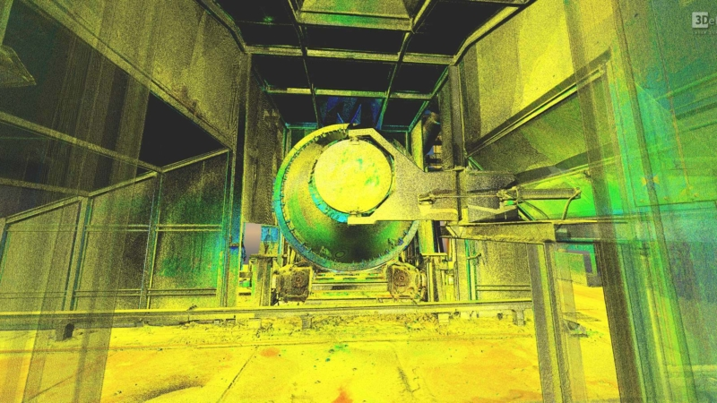
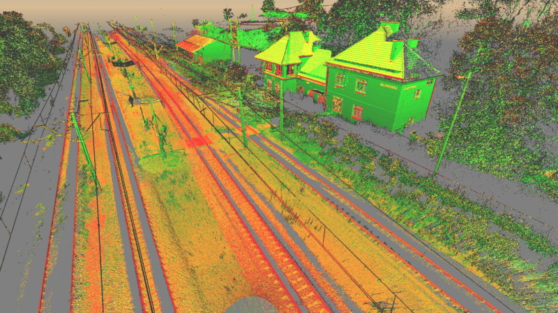
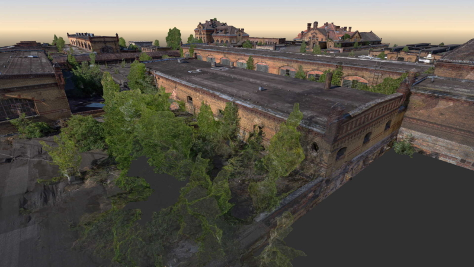
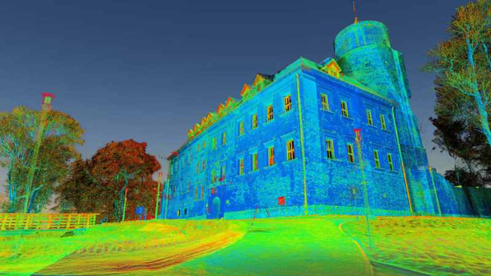
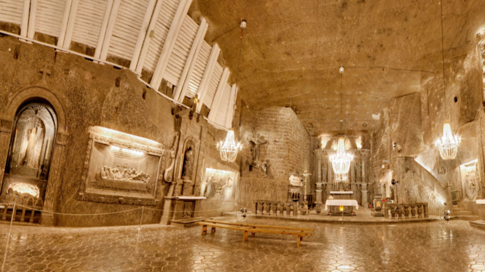
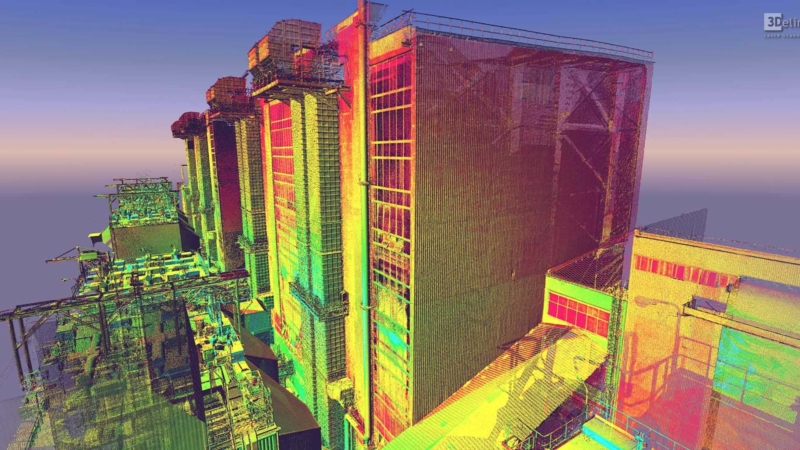

APPLICATIONS FOR 3D LASER SCANNING

PROPERTY DEVELOPMENT
3Deling produce as-built surveys and clash detection analysis for a range of industrial applications like power stations to oil installations. Utilising point cloud data as a basis, we can provide a bespoke product to suit your particular need. Whether it is 3D CAD based (DWG, DGN etc.) or intelligent PDMS databases and models, our team will elaborate with you to provide a solution to your unique requirements.

INDUSTRIAL APPLICATIONS
BIMD produce as-built surveys and clash detection analysis for a range of industrial applications like power stations to oil installations. Utilising point cloud data as a basis, we can provide a bespoke product to suit your particular need. Whether it is 3D CAD based (DWG, DGN etc.) or intelligent PDMS databases and models.

URBAN PLANNING
BIMD offer a range of building measurement services. Utilising highly accurate 3D point cloud information as a base we can produce a diverse range of products including Building Information Models (BIMD), mostly delivered in Revit (AECOsim & ArchiCAD available), 3D CAD models, 2D floor plans, sections and elevations. Point clouds and panoramic images can also be specified as deliverables. Our team will elaborate with you to develop your scope and deliver the right product for your needs.

HERITAGE
Utilising our extensive experience 3Deling provide highly accurate documentation for the heritage sites. As well as 2D or 3D CAD deliverables we can also supply a range of photographic or scan-based products from panoramic imagery, virtual tours and walkthroughs to high-resolution orthoimages.

DIGITAL PLANT
BIMD laser scanning can be utilised to capture large urban areas. The point cloud information can be further use to support your planning and design needs. Our products include 2D or 3D topographical surveys, 3D modelling for Rights of Light analysis and 2D or 3D models for the production of contextual elevations.
ABOUT BIMD
BIMD - The experts in 3D laser scanning and point cloud processing
We are a professional surveying company with a primary focus on 3D laser scanning. Based
in the UK, Norway, Ukraine and Poland, with the main office in Krakow, Poland, we
operate worldwide with vast experience over a diverse range of services. We offer a wide
a spectrum of point cloud-related products such as 2D documentation, 3D models, Building
Information Models (BIMD), and PDMS models.
Our products and services are suitable for industrial sites, offshore installations and
vessels, architecture, heritage and large-scale urban regeneration projects.
We employ around 40 highly-skilled CAD engineers which allows us to process all our data
in-house. The majority of our point cloud processing is completed utilising Bentley
Systems Software (Microstation, Bentley Descartes, Bentley Pointools and ConextCapture).
We also work in AutoDesk Revit, ZF Laser Control, and Leica Cyclone. We developed our
own custom, standalone software solutions that help optimize point cloud processing.
They have been implemented in our everyday work and within our clients own workflows.
What is more, our Quality Management System has received ISO 9001 certification and is
currently certified to the latest version of ISO 9001:2015.
We use the latest laser scanners: ZF Imager 5010C, ZF Imager 5010, Reigl VZ-400 (long
range), and Leica Total stations for control measurement.
The security and confidentiality of our client’s data are paramount within our working
practices.
ADDITIONAL INFORMATION:
Insurance
We have full professional liability insurance
Safety training
We have safety training for the offshore industry accredited by OPITO & NOGEPA.
ISO 9001:2015
Our Quality Management System is ISO 9001:2015 certified
BIMD LASER SCANNING SITE WORKFLOW
This video presentation takes you through our custom laser scanning- site workflow. We place a great deal of emphasis on the quality of our deliverables. On request, we are happy to supply our survey network adjustment and registration reports.
For larger sites, we install, measure and adjust a combination of scanning targets and retro targets which are controlled via total station observations. Along with the scan data we can also supply a coordinate list of the retro targets which will be left on site.
These can be used as an ongoing control network for setting out or further survey works during the construction phase of a project, ensuring all works are completed on a consistent grid. All control will be relative to a predetermined network, whether that be a local, site or a national grid. Further to the capture of the scan data we also offer a wide range of services converting cloud data into vector files, from traditional CAD deliverables through BIMD ready formats such as Revit to PDMS for industrial applications. We can also offer engineering services.

APPLICATIONS FOR BIMD SCANNING
We offer a wide range of products plotted or generated from the point cloud data including:
BIMD mesh models
Ideal for irregular or organically shaped objects.
Plant design models
We can covert point clouds to Aveva PDMS, CADWorx and Open Plant models.
Orthophoto
We offer Orthophotos – metric images commonly specified for heritage sites.
Deformation surveys
We offer deformation surveys and movement monitoring.
3D CAD models
We offer a range of 3D CAD models, in different formats and levels of detail to suit your needs.

Volume surveys
We offer highly accurate and fast volumetric surveys utilising laser scanning technology.

ROL-Right of Light Surveys
We offer 2D or 3D modelling tailored specifically for use within the Rights of Light analysis.
Construction Verification
We can perform clash detection analysis, comparing either design model to cloud or cloud to cloud.
APPLICATIONS FOR BIMD LASER SCANNING
We believe our work speaks for itself. Browse our most recent projects below you can sort them by application or by product.
-

BIMD mesh models, Architecture & Constructions, Registered Point cloud, Volume surveys
-

BIMD mesh models, Architecture & Constructions, Registered Point cloud, Volume surveys
-

BIMD mesh models, Architecture & Constructions, Registered Point cloud, Volume surveys
-

BIMD mesh models, Architecture & Constructions, Registered Point cloud, Volume surveys
-

BIMD mesh models, Architecture & Constructions, Registered Point cloud, Volume surveys
-

BIMD mesh models, Architecture & Constructions, Registered Point cloud, Volume surveys
-

BIMD mesh models, Architecture & Constructions, Registered Point cloud, Volume surveys
-
BIMD mesh models, Architecture & Constructions, Registered Point cloud, Volume surveys
-

BIMD mesh models, Architecture & Constructions, Registered Point cloud, Volume surveys
-
.jpg)
BIMD mesh models, Architecture & Constructions, Registered Point cloud, Volume surveys
-

BIMD mesh models, Architecture & Constructions, Registered Point cloud, Volume surveys
-

BIMD mesh models, Architecture & Constructions, Registered Point cloud, Volume surveys
-
BIMD mesh models, Architecture & Constructions, Registered Point cloud, Volume surveys
-

BIMD mesh models, Architecture & Constructions, Registered Point cloud, Volume surveys
-

BIMD mesh models, Architecture & Constructions, Registered Point cloud, Volume surveys
.png)
.png)
.png)